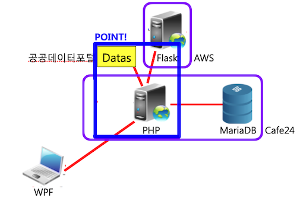
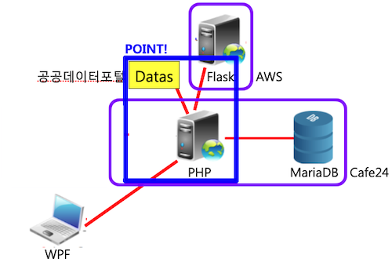

Results Screens


Background and Purpose
I attended the project while working at 'DearGreen Co., Ltd.'.
I attended the project while working at 'DearGreen Co., Ltd.'.
What I Learned
- I learned how to implement functions on pages such as network communication with HttpWebRequest with WPF.
- I learned how to connect with MySQL using MySQLi in PHP.
- I learned how to link the web server on Cafe24.
- I learned how to link a server built with Flask to the website after launching it on AWS.
Overall Structure and Used Skills


- WPF(C#): I implemented a Windows app.
- PHP: I built a website and server.
- MariaDB: I built a database and utilized public data.
- Flask: I built a server to link a data analyzer with a homepage.
- Cafe24: I used it as a hosting service to open a homepage.
- AWS: I used it as a hosting service to enable a data analyzer.
Development Environment
- Visual Studio 2017: I used it to implement Windows apps.
- Visual Studio Code: I used it to implement a server.
- FileZilla: I used it to access Cafe24.
- TablePlus: I used it to connect to DB.
- Terminal: I used it to access AWS.
- Figma: I used it to collaborate with designers.
- Google Drive: I used it to share meeting materials with team members.
Further Explanations
- (Please understand that I cannot release the source code as this program is actually in business.)